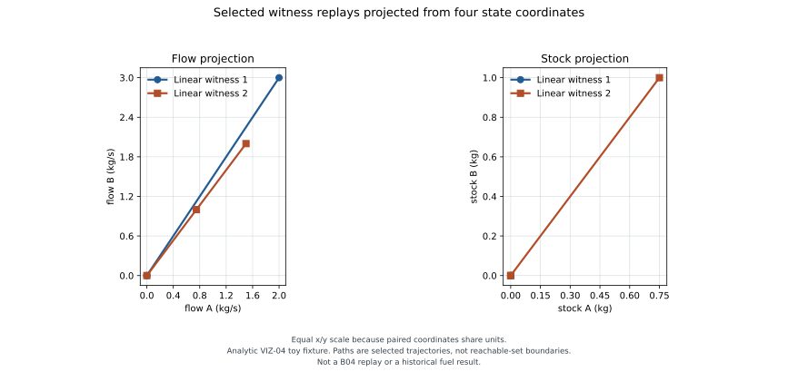

Nonlinear replay projected from four state coordinates
Analytic toy fixture only. The plant is a small, discrete four-state example used to test witness-to-replay association. It is not the historical B04 fuel model, a B04 replay, or a reachability set.
Both selected linear witnesses have the same terminal objective (0 kg/s) and use the same two control intervals. The explicit linear toy model integrates each control into its flow coordinate, and minimizes the terminal residual norm ||(x₁,x₃) − (1,1)||₂. This objective is nonnegative, both verified histories attain zero, and therefore both are global minimizers. The fixture checks each full history against the declared linear dynamics and original objective; it does not claim that these two witnesses form a complete optimal family. The independent nonlinear toy plant produces different trajectories and terminal stock objectives. The side-by-side panels project the full four-dimensional replay state onto the flow coordinates (x₁,x₃) and stock coordinates (x₂,x₄).

Recorded comparison values
| Selected witness | Linear objective | Replay terminal state (x₁, x₂, x₃, x₄) | Replay objective |
|---|---|---|---|
| 1 · controls (0,0), (1,1) | 0 kg/s | (2 kg/s, 0 kg, 3 kg/s, 0 kg) | 0 kg |
| 2 · controls (0.5,0.5), (0.5,0.5) | 0 kg/s | (1.5 kg/s, 0.75 kg, 2 kg/s, 1 kg) | 1.75 kg |
The objective names and units belong to their own models. “Replay complete” means the declared discrete map ran to completion; it does not establish nonlinear feasibility, objective quality, or global optimality. The artifact marks all three as not checked and records replay objective values as observations.
Policy classes stay separate: this example contains selected linear witnesses only. It does not merge them with a nominal reference or frozen-coefficient regulator. For B04, the nominal u=0 row is not evidence of a zero-control solution from the perturbed initial state.
The checked-in source data retain the plant identity, parameters, physical times, controls, states, policy class, linear evidence, and separate objectives.
Reproduce the figure
Install the pinned reporting dependencies from scripts/reports/requirements.txt, then run:
python scripts/reports/viz04/render_saved.py \
--artifact docs/examples/viz04-replay-comparison.json \
--output docs/examples/viz04-replay-comparison.svg
ctest --test-dir build/core --output-on-failure -R '^(replay_comparison_tests|nonlinear_replay_tests)$'The independent integration test checks the saved projections against the replay stepper. The B04 historical report remains non-executable because its canonical controls and integration conventions are unavailable.